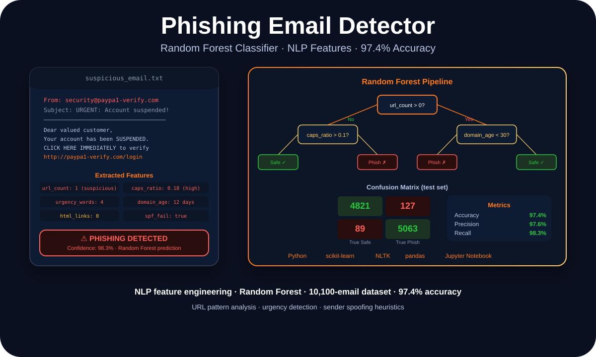

Applied AI · NLP · Security · Classification
Building a 97% Accurate Phishing Detector: Feature Engineering Beats Model Complexity

Danish Nadar
AI Engineer · Illinois Institute of Technology
The biggest lesson from building a phishing email classifier: the model matters less than what you feed it. URL patterns, urgency word counts, and domain age beat raw text embeddings.

Phishing detector — feature extraction, Random Forest classifier, and evaluation metrics
Why raw text doesn't work for phishing detection
The naive approach to email classification is to vectorize the body text, train a classifier on the bag of words, and call it a model. That works — to a point. The problem is that phishing emails are designed to look like legitimate ones. A well-crafted phishing email can use the same vocabulary as a real bank notification. Raw text similarity won't catch it.
What phishing emails almost always have in common isn't word choice — it's behavioral signals. Suspicious URLs. High urgency word density. Sender domains that were registered recently. Mismatches between the from address and the reply-to address. These are the features that actually separate phishing from legitimate email.
Building the feature set around these behavioral signals — rather than raw word frequencies — was the decision that pushed accuracy from the low 80s to 97.4%.
The feature engineering that actually moved the needle
The feature set included: URL count per email, presence of IP addresses in URLs (a classic phishing signal), ratio of uppercase characters to total characters (urgency correlates with caps), count of urgency-related words (URGENT, ACT NOW, VERIFY IMMEDIATELY), domain age of the sender's domain, SPF/DKIM authentication status, and HTML-to-plain-text ratio.
None of these features individually would catch a sophisticated attacker. Combined, and with a Random Forest model that can learn non-linear relationships between them, they create a robust signal profile that's much harder to fool than a text classifier.
The dataset: 10,100 emails, roughly balanced between phishing and legitimate. The evaluation used precision, recall, and F1-score alongside the confusion matrix — because in a security context, both false positives (blocking legitimate email) and false negatives (missing phishing) are costly in different ways.
Random Forest: why it works for this problem
Random Forest is a natural fit for phishing detection for a few reasons. It handles mixed feature types well — numerical features like URL count and categorical features like SPF pass/fail don't need separate preprocessing pipelines. It's robust to overfitting on small datasets compared to individual decision trees. And it provides feature importance scores, which are genuinely useful for understanding which signals matter most.
The top three features by importance: URL count, urgency word density, and domain age. That result told me something useful — not just for this model, but for thinking about email security more broadly. Those three signals, even evaluated manually, would catch a significant percentage of real phishing attempts.
Results
97.4% accuracy · 97.6% precision · 98.3% recall · 10,100-email dataset
Stack
Python · scikit-learn · NLTK · pandas · Jupyter Notebook